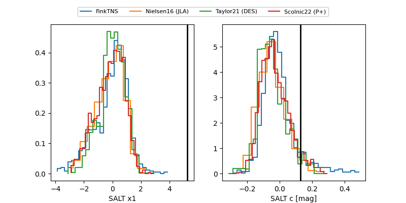

FINK: ZTF25abmtkav
Lasair: ZTF25abmtkav
ALeRCE: ZTF25abmtkav
TNS: 2025weh
YSE: 2025weh
ZTF25abmtkav (ztf,fink)
2025weh (tns,yse)
equatorial (ra, dec) = (345.4326,+5.36993)
galactic (l, b) = (79.6081,-48.05716)

last atlasc=19.53, ztfg=20.12, ztfr=19.71
1 atlasc, 6 ztfg, 9 ztfr detections